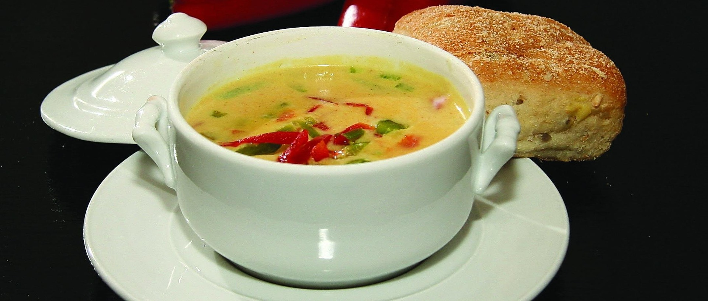

This luxurious, fan favorite Red Lentil Curry will get you truly excited about lentils! It’s an ultra-creamy and gourmet Indian-inspired meal made in one pot with pantry staples. Whip it up on a weeknight in 45 minutes!
Red lentil curry is a creamy, protein-rich dish made with split red lentils (masoor dal), coconut milk, tomatoes, and aromatic spices. Key ingredients include onions, garlic, ginger, turmeric, cumin, coriander, and garam masala. Often, it includes spinach, curry leaves, or fresh cilantro, with oil or ghee for cooking.